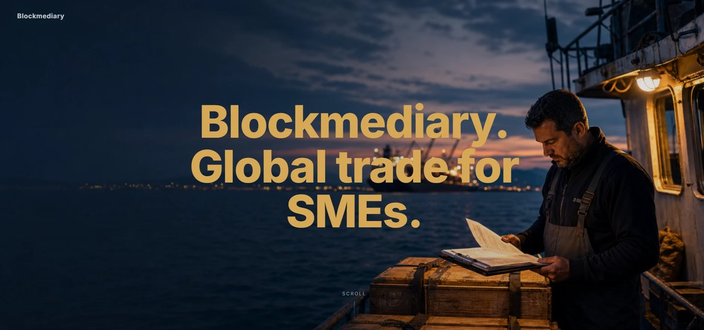

Blockmediary
Joint 1st in the MSc FinTech cohort pitch
Most Innovative Idea · FinTech West Student Showcase 2026
A stablecoin escrow built as an alternative to the bank Letter of Credit for smaller cross border trades. I was Chief Compliance Officer, and gave the sign off before a real settlement on Base Mainnet.